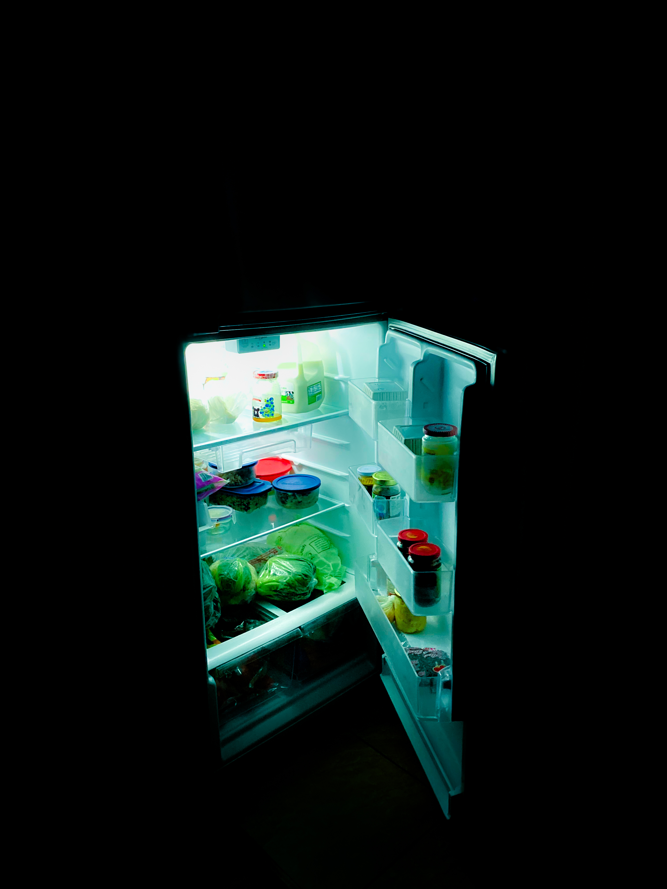
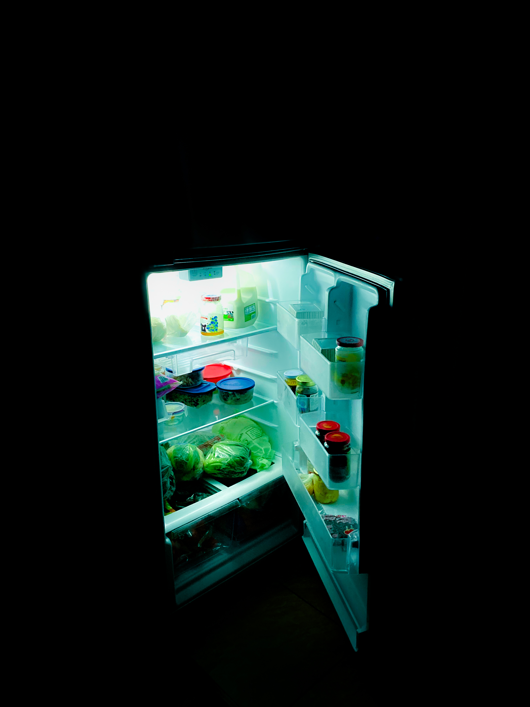
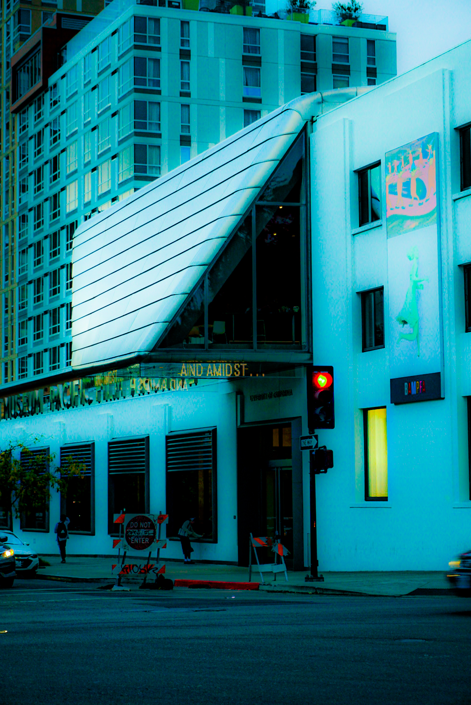
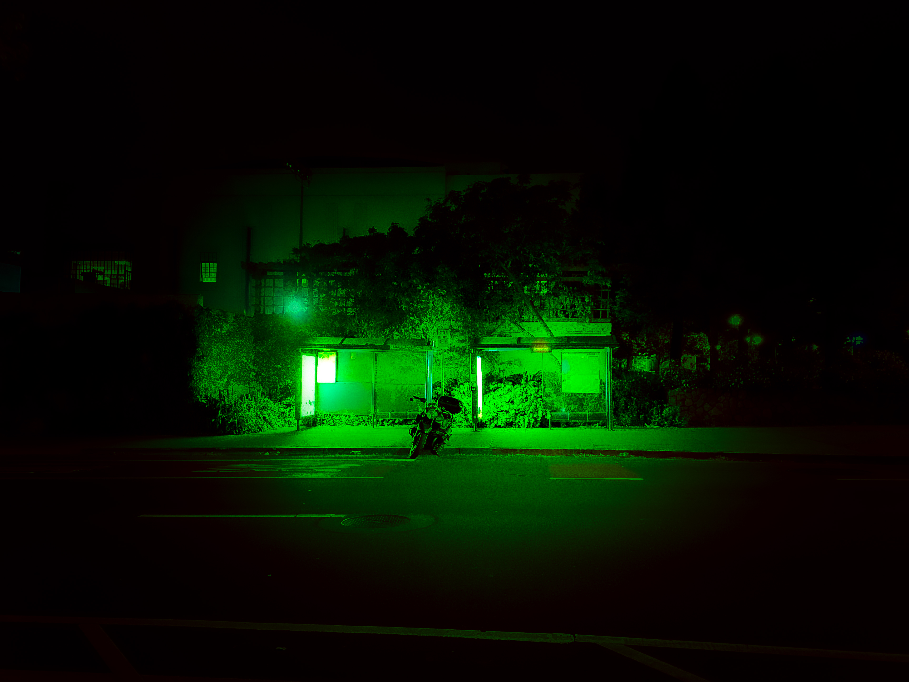
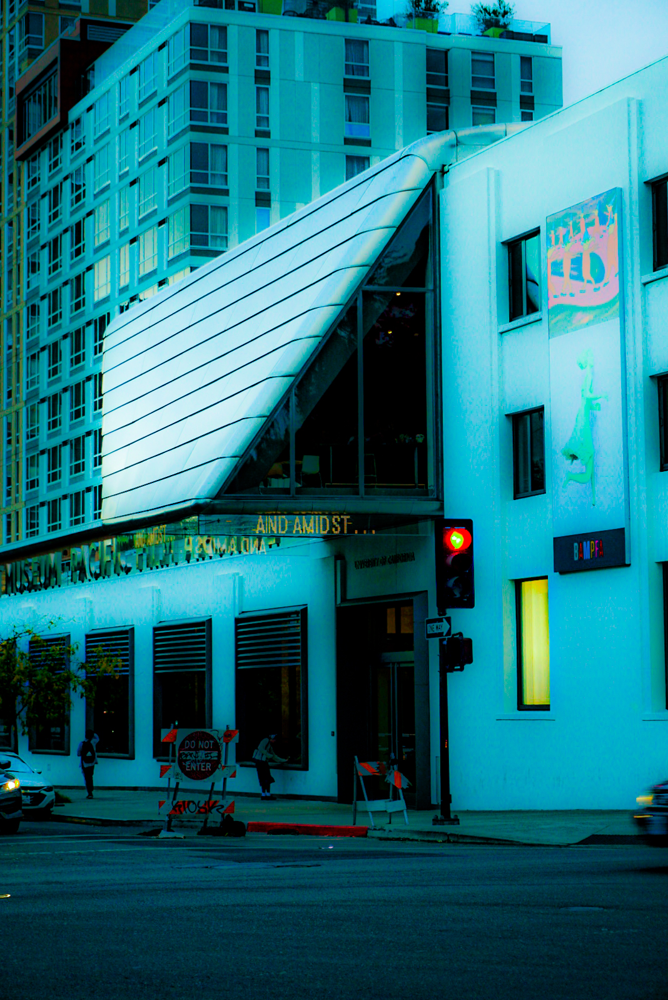
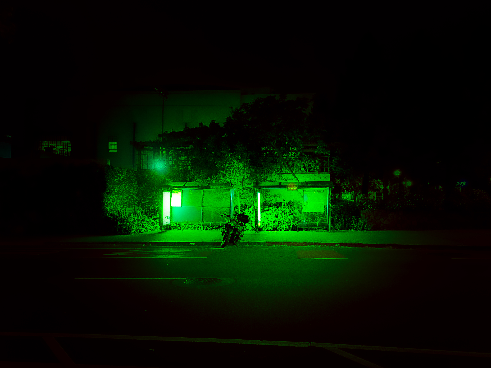

i think i've seen these scenes in a dream. familiar places, but a mysterious haze blurs my vision as i pull deeper through them, and with difficulty,
as if my legs are trudging through thick fog. lights illuminate dark spaces, giving the illusion that i'm getting closer to my conclusion. but as
i move, it seems like these scenes never end... is this a dream or reality? (berkeley and san francisco)

 



 


